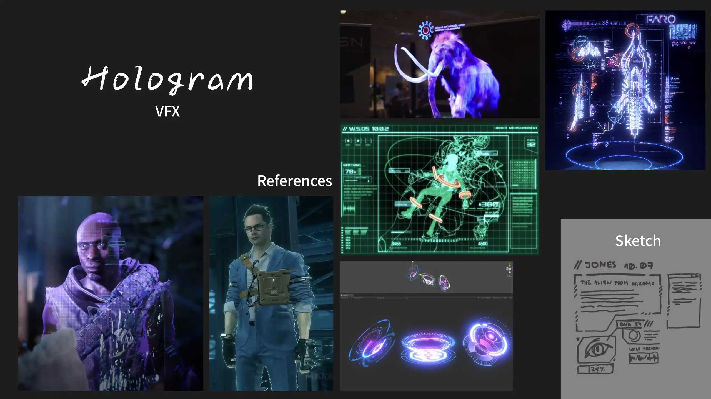
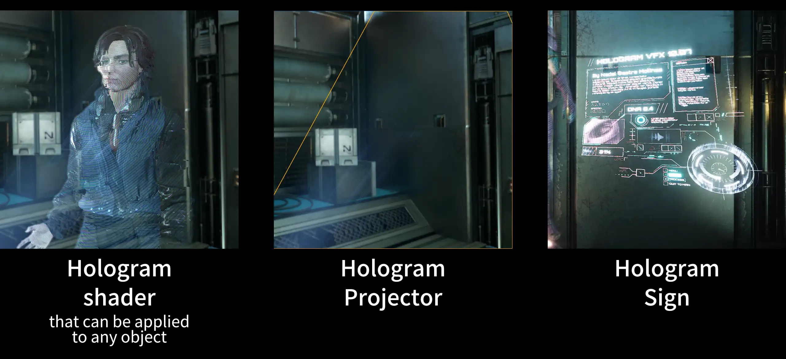
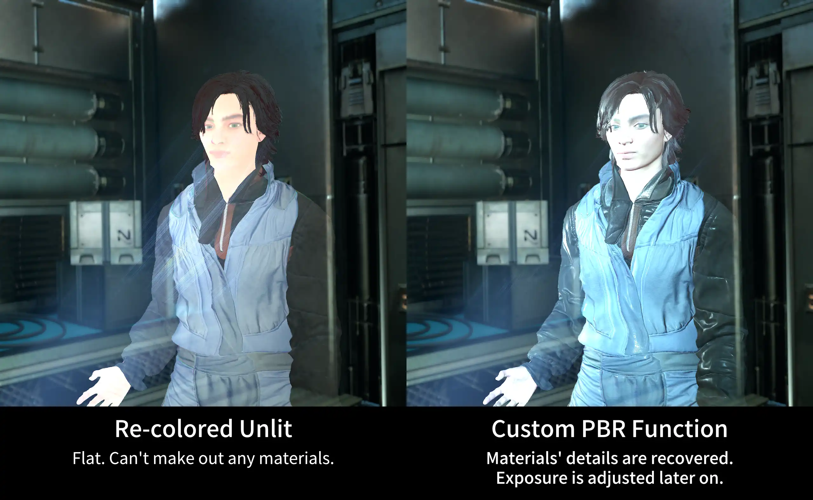
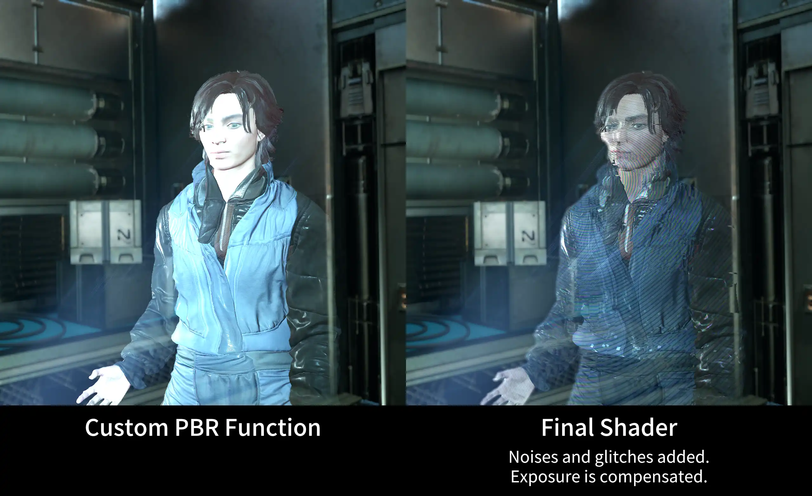
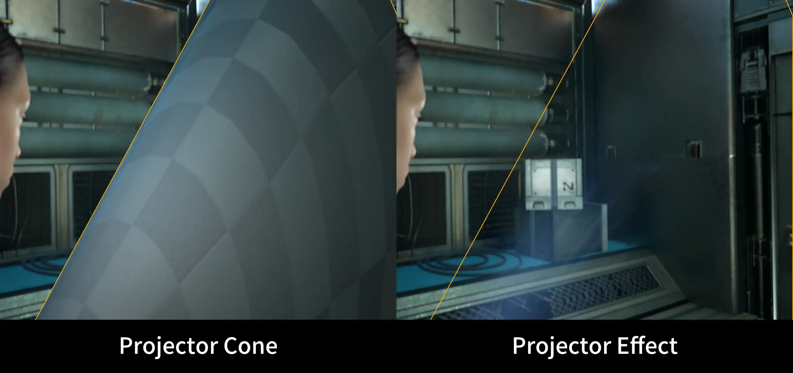

2025/6
Unreal Engine, Substance Designer, 3DS Max, Adobe Illustrator, Affinity Designer
◆ I did not use generative AI.
What I did I created the hologram vfx and shader. I adjusted the animations and edited the costumes to fit the rig.
Assets used The environment, costumes, characters, and character animations are assets created by other artists:
- Unreal Engine Metahumans
- Jones Character from Mixamo: https://www.mixamo.com
- Working Sci-Fi Uniform by DEYMAR on Sketchfab: https://skfb.ly/oGoSS
- MoCap Online Free Animation Pack by MoCap Online on Fab: https://fab.com/s/70f5ca18b360
- Polar Facility | Modular Sci-Fi Environment Kit by 3DBrushwork on Fab: https://fab.com/s/05743e8bc7ca

Hologram VFX
This Hologram VFX I made in Unreal Engine is composed of three main parts:

Hologram shader
The hologram shader gives objects the hologram appearance. I started off with Unreal's translucent unlit shading model. Then, I recolor it using the Engine's Color Curve feature which makes it easy to adjust or recolor the holograms by editing or swapping out the asset.
My next step is to recover the details of the materials. A hologram is made of light, so I am using the unlit shading. However, it is also a projection of a real image captured elsewhere, and that image has its own original lighting and materials. Following that logic, I recreated a simplified PBR function within my material using a custom HLSL node. This way, we can make out the materials, and the lighting is independent from the rest of the scene. The colors, intensity, and position of the lights are adjusted through the material parameters.


On top of that, I added noises and glitches that give this hologram shader its characteristic look. I also blurred the edges of the holograms with a post-process material.
In and Out transitions are controlled through a Material Paramter Collection.

Hologram projector
The hologram projector VFX is based on a cone to which I apply panning textures. The lines texture follows the cone UVs, while the pixels texture is using screen UVs.

Hologram sign
All of the movement is driven by a few textures with different gray-scale information in each channel. In the shader, I use this information to animate the sign and achieve a glitchy and dynamic holographic look.